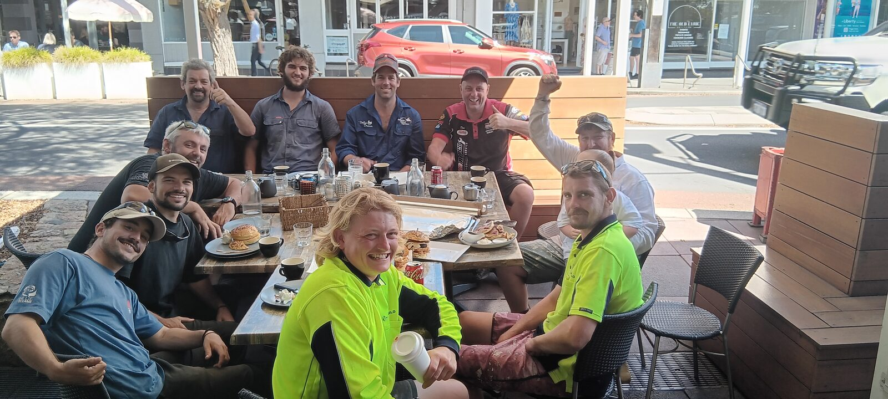
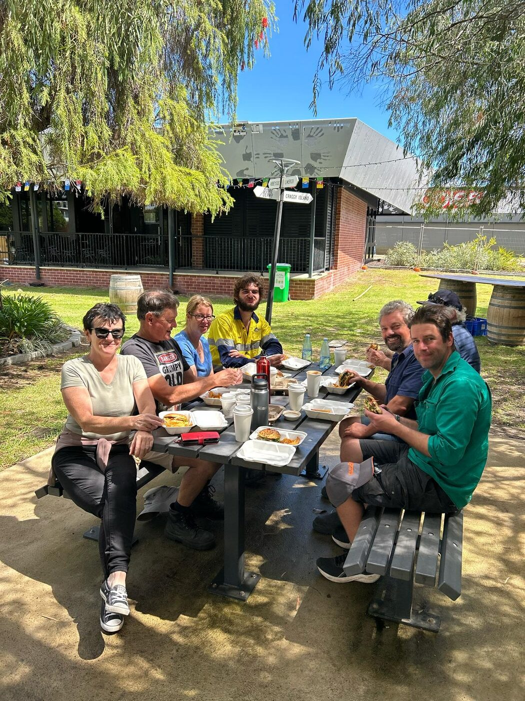
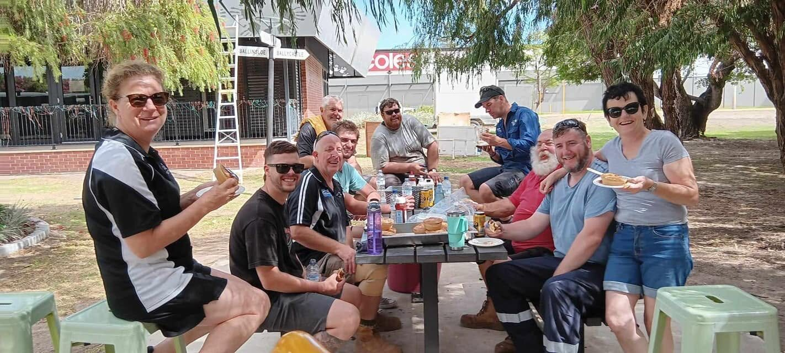
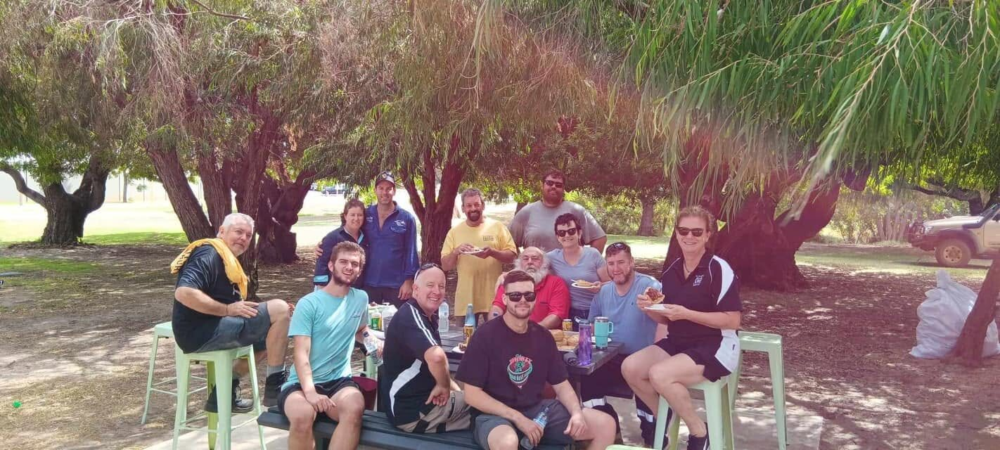
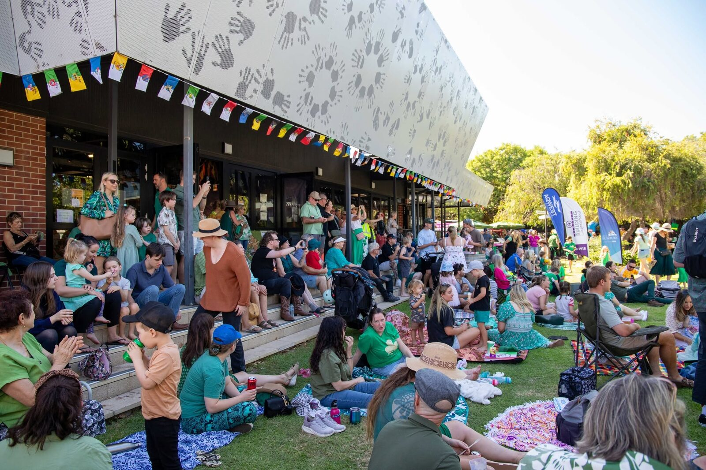
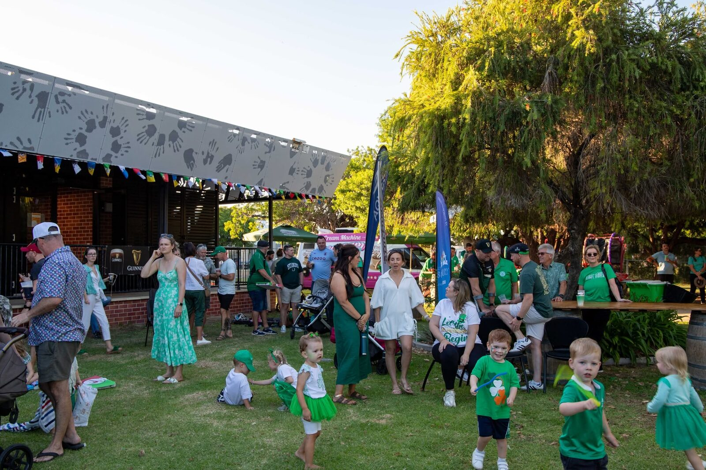
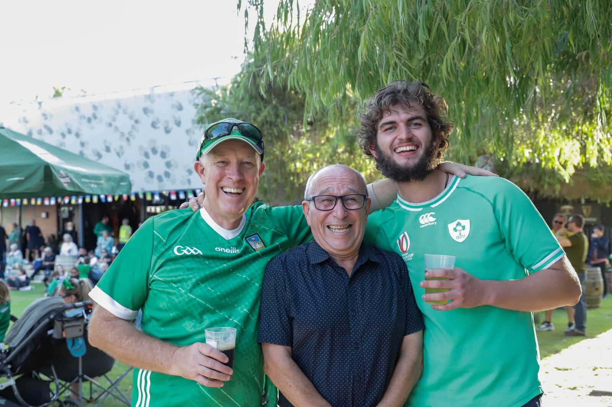
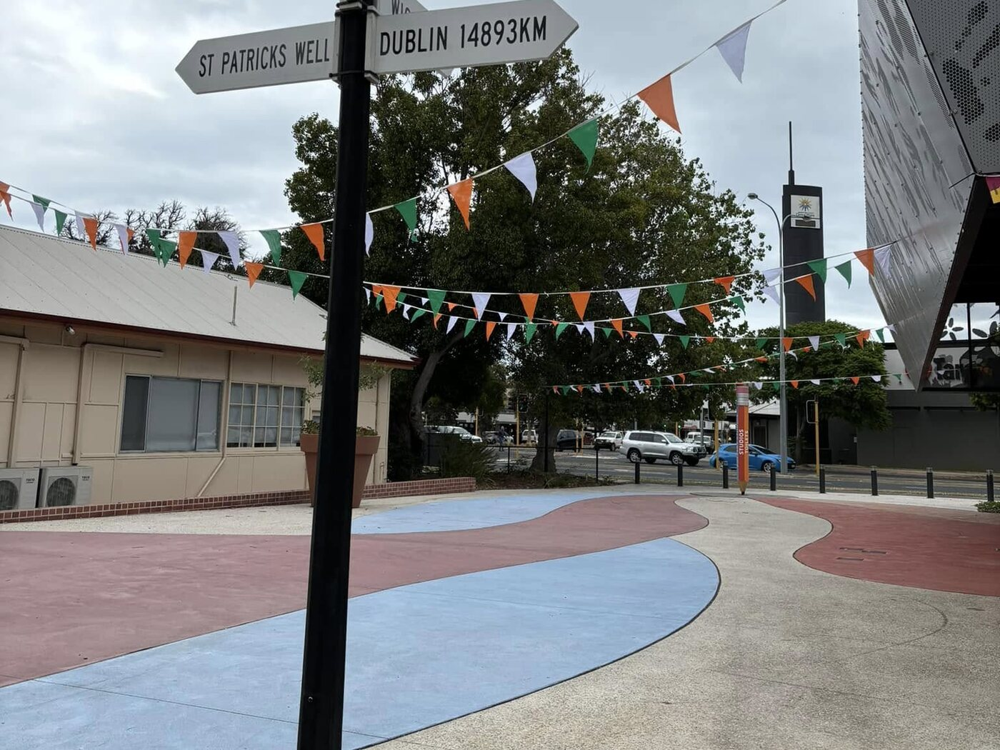

The South West Irish Community Group have done a great job running the St Patrick's Festival in Bunbury the last couple of years, and they are always looking for volunteers. We had a great time helping out with the festival setup in the previous years — here are some photos with the great committee behind the scenes and the other volunteers.
Volunteers 2025
-

Enjoying our breakfast rolls courtesy of Dan and Emma after setting up the venue for day 1. -

Burgers from Sears cafe were much appreciated stopping for lunch with the team on day 2.
Volunteers 2024
-

You can't avoid having a good time with this crew. -

Some of the local legends, out of the sun for a minute.
Saturday off to a good start
-

The crowd coming in, getting warmed up for the evening show. -

Families coming together for the plethora of daytime kids activities. -

Colours on. -

Dublin, 14,893 km.